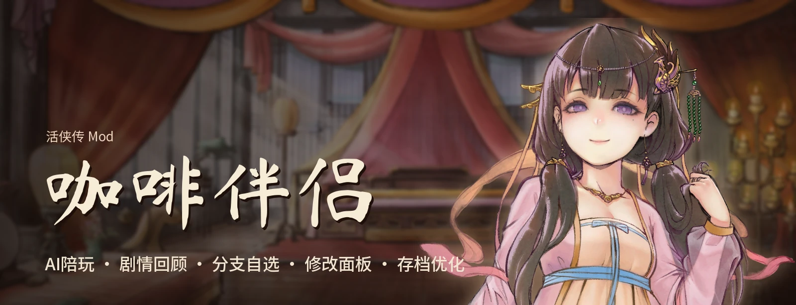
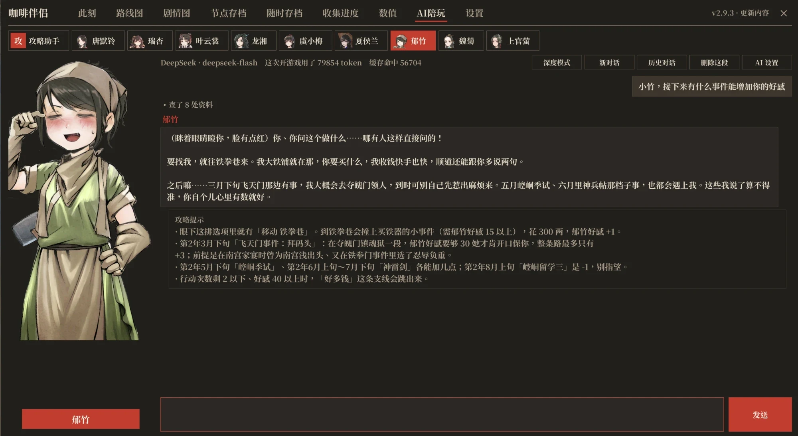
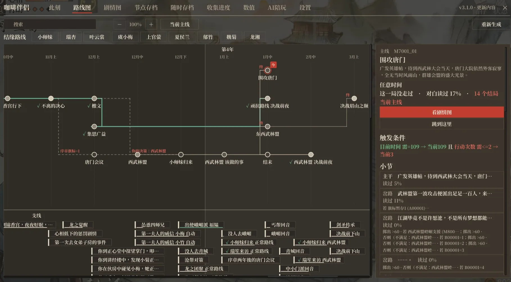

Led a conversational AI test-case generation system: a QA engineer describes a test, the system returns an executable Airtest + Poco script grounded in a knowledge base of 100K+ Unity prefab nodes, GM commands, protocol and config data mined from the game source.
Closed the loop from generation to deterministic rewrites, static validation, a false-pass audit, an on-device run and knowledge feedback, raising the share of regression test points that yield a runnable, audit-clean script from roughly 30% to 80% on the same samples. Write-up.
Built the front and back end of the internal automated testing platform (React + TypeScript / Flask + Socket.IO + MySQL) used by dozens of QA engineers, and shipped GM commands giving one-click entry into 30+ game scenarios that used to need fragile UI navigation.
Built a multi-agent four-view image generation system (front, back, left and right from one reference): 8 specialised agents in ReAct loops with MCP tool calling, where a separate evaluator judges each view and cross-view consistency, and only the failing views are regenerated. 90%+ of requests converge within 2 iterations. Write-up.
Shipped Storyboard generation, prompt-to-workflow, and a video editing agent that turns conversation into executable node graphs with 10+ structured editing operations.
Designed and built an AI on-call assistant end to end (Python / React / SQLite): an LLM agent reads each incoming issue, classifies its intent and routes it to the right workflow. Adopted by 1,000+ engineers; classification accuracy up 80% over the manual process.
Real-time architecture on WebSocket long connections with asynchronous LLM classification behind fault-tolerant queues, response caching and a persistence layer, so nothing is lost under load. A documentation-based interception step cut manual on-call requests by 20%.
Shipped a React dashboard for live request volume, ticket status and trends, and a reusable iOS Item Picker component with adaptive sheet and panel layouts.
PythonReactSwiftLLM AgentsWebSocketSQLiteiOS
AlibabaSoftware Engineer
Led an Android network diagnostics feature for Lazada in Southeast Asia, where weak and volatile networks were the top source of issue reports and no mature application-layer approach existed. Designed a detection strategy targeting a ~30% reduction in network-related reports.
Built the detection and diagnostic SDKs and UI in Kotlin and Java for three cases (blocked app network access, signal strength, and proxies), each paired with a fix the user can apply, so people in weak-network regions could self-diagnose.
KotlinJavaAndroidSDK
Projects



Coffee Companion
Oct 2026 – Present
A 36K-line C# mod for the Unity wuxia RPG Legend of Mortal, built on BepInEx/Harmony with 230+ runtime patches: a story route map and flowcharts parsed from 2,200+ decompiled Lua scripts, save-anywhere through Lua record-and-replay, and a stat editor. 70+ releases in two weeks, 100+ stars, 20K+ downloads, still in active development.
The centrepiece is an in-game tool-calling agent. Its 15 tools read a knowledge base built from the parsed scripts (branch conditions, where each of 1,000+ story flags is set and checked, per-route totals of affinity and stats) plus the live save and the choices on screen. It looks things up over several rounds, then answers from what it found, not from memory.
11 character personas talk in their own voice, know only the story the player has read, and respect 3 spoiler levels. Any change to the save is proposed as a card and applied only when the player confirms.
A 20-question graded eval with per-turn traces drove the fixes to retrieval ranking, tool coverage and prompt rules (15/20 standard, 18/20 deep mode). A stable prompt prefix and thinking blocks passed back unchanged keep the prompt cache hit rate at 80–86%.
An AI-native roguelike deck-builder: an LLM generates 5 content types live during a run (cards, enemies, events, room rules and characters), each through the same generate, validate, repair, retry loop.
The model only combines whitelisted effects; deterministic combat runs on the backend. Three validation layers (structure, mechanic allowlist, numerical budget) clamp what is close and bounce what is not, with the reason fed back for a retry.
The budget is calibrated against real Slay the Spire cards, so "balanced" is measured, not guessed. Of 2,658 logged candidates, about 95% were served. The validator from the game is right here, so you can try it.
Content moderation as a decision, not a label: a first pass extracts 8+ structured risk signals (toxicity, uncertainty, context) and a ReAct agent picks a proportionate action: do nothing, downrank, add friction, or throttle.
Evaluated on the Jigsaw toxic comment dataset. The point was calibration: severe content gets throttled, borderline content gets friction, and the uncertain cases are the ones the agent is most careful with.
A U-Net with depthwise-separable and atrous convolutions for the Airbus ship dataset (50k+ satellite images), reaching Dice 0.63 and precision 0.67. Ships are tiny relative to the image, so the work was in the losses (BCE, Dice, Focal) and the skip connections, not the backbone.
Published as first author in Applied and Computational Engineering, CONF-SPML 2025.
Spearheaded development of an Android productivity app for goal-setting and task prioritization using Java and Android Studio.
Implemented adaptive UI with dynamic goal creation dialogs for varied task types, recurring goals, and context tagging.
Designed modules using Strategy, Observer, Abstract Factory, and Builder patterns; led rigorous unit testing in an Agile team.
JavaAndroidAndroid StudioAgileDesign Patterns
Deep Learning Applications in MTG
Jan – Mar 2024
Led development of CNN and Vision Transformer (ViT) models for Magic: The Gathering creature type classification across 15 classes, reaching up to 60% accuracy with ViT and Supervised Contrastive Learning (SupCon).
Used DCGAN to generate new card images and widen the training set.
Addressed class imbalance and in-class variation through preprocessing and augmentation.
PythonCNNViTDCGANDeep Learning
Line Following Robot
Nov – Dec 2022
Built a line-following robot from scratch with a team of four, from sensors and motors to programming and control. We 3D-printed the chassis, made and soldered the circuits, tested it over and over, and raced it against the other teams.